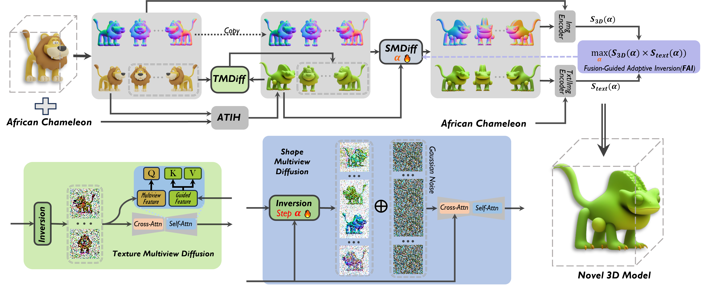
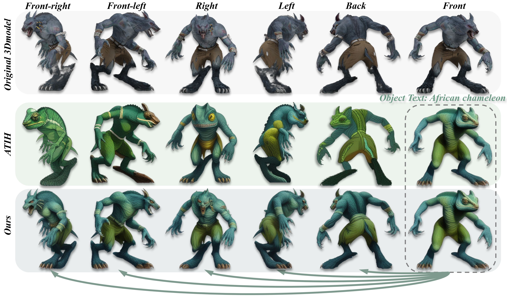

2Nanjing University 3Nankai University

Generate Meshes
Original model(Sabrewulf)
Cobalt metal

Titanium metal
African chameleon

Ant

Bald eagle

Bighorn

Chromium metal
Cock
Orchid plant
Shark
fire salamander
Original model
(Kinni - character)

Aluminum metal

Egyptian cat
Theater building

Gold
Tomato

Lily plant

Indigo bunting

Broccoli

Sycamore tree

Triceratops

Orchid plant

Original model (Apatosaurus)

Original model
(Devil)

Original model (Nesting doll)

Original model
(Tiger)

Banana

Kit fox

Cock

Giraffe

Gold

Gazelle

Flamingo

African chameleon

King penguin

Polar bear

Peacock

King penguin
Abstract
In this paper, we tackle a new task of 3D object synthesis, where a 3D model is Composited with another object category to create a novel 3D model. However, most existing text/image/3D-to-3D methods struggle to effectively integrate multiple content sources, often resulting in inconsistent textures and inaccurate shapes. To overcome these challenges, we propose a straightforward yet powerful approach, category+3D-to-3D (C33D), for generating novel and structurally coherent 3D models. Our method begins by rendering multi-view images and normal maps from the input 3D model, then generating a novel 2D object using adaptive text-image harmony (ATIH) with the front-view image and a text description from another object category as inputs. To ensure texture consistency, we introduce texture multi-view diffusion, which refines the textures of the remaining multi-view RGB images based on the novel 2D object. For enhanced shape accuracy, we propose shape multi-view diffusion to improve the 2D shapes of both the multi-view RGB images and the normal maps, also conditioned on the novel 2D object. Finally, these outputs are used to reconstruct a complete and novel 3D model. Extensive experiments demonstrate the effectiveness of our method, yielding impressive 3D creations, such as shark (3D)-crocodile(text) in first row of Fig. 1.
Framework
An example of texture consistency
Our TMDiff achieves better texture consistency compared to ATIH
An example of shape accuracy

Our SMDiff demonstrates better shape accuracy compared to Era3D